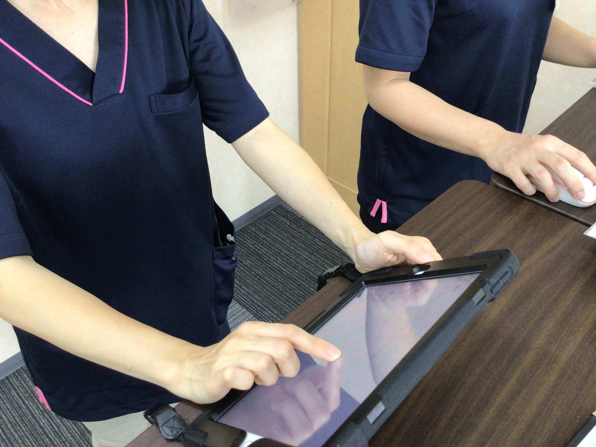

募集要項
- ●時給：1,400円～1,800円
- ●勤務時間：8:45〜16:00（休憩1時間）
※勤務日数・勤務時間はお気軽にご相談ください。ご希望に添えるよう、臨機応変に対応します。扶養内での勤務もご相談ください。 - ●勤務日：月〜土のうち週3日（シフト制）
- ●休日：日曜・年末年始（12/30〜1/3）・お盆（8/13〜8/15）
※現在は月〜金で営業しています。2027年春ごろから土曜営業を予定しているため、土曜日に月2回程度勤務できる方を優先して採用します。 - ●交通費支給(規定支給・１万円まで)
車・バイク通勤可 - ●試用期間3カ月(試用期間中も交通費を支給します)
- ●有給休暇(法定通り)
給与モデル
1日あたりの給与：時給1,400円×6時間15分＝8,750円
月収例：8,750円/日×12日（週3日）＝105,000円＋交通費
明るく、元気な方、思いやりのある方を募集します！
勤務地
埼玉県東松山市高坂3-3-13 カームハウス松田1階
（2024年11月に住所が変更されました）
管理栄養士の仕事に加えて、介護の経験も積んでみませんか？
やわらぎは運動が中心の半日型デイサービスです。入浴や食事の介助はなく、利用者さんの体調確認（バイタルチェック）や、運動の見守り・ご案内が中心です。
「管理栄養士で、介護の現場も分かる」は、これからの大きな武器になります。
送迎は必須ではありません。運転ができる方は、お手伝いいただけると助かりますが、ご相談のうえで決めます。
定着支援金
yawaragiでは、人材採用に係るコストの一部を、長期的にご活躍いただける新たな仲間の皆様へ還元し、入社後の安定的な勤務を支援するため、【定着支援金】を支給する制度を設けています。
2027年3月31日までにご応募いただいた方が対象です。
支給金額 20,000円
適用条件
以下の全てを満たした方に支給いたします。
- 条件1
- 当社のホームページに設置された応募フォーム、または記載の連絡先に直接ご応募いただいた方。
- 条件2
- 入社後6カ月の勤務継続が確認できた方。
- 条件3
- 支給時に当社に在籍している方。
※支給時期
原則として、入社7カ月目の給与支払日と合わせて支給いたします。
【重要】ご応募前に必ずご確認ください
- 本制度は、求人サイトや人材紹介会社などの第三者を経由したご応募には適用されません。
- 他の求人媒体からの応募通知が当社にあった場合、または応募履歴が確認された場合は、本支援金の支給対象外となります。
- 定着支援金の支給の有無、勤務継続の定義など、詳細については、面接時に改めてご説明いたします。
- 本支援金は、所得税・住民税の課税対象となる場合があります。税務上の取り扱いについては、必ずご自身で専門家にご確認ください。
～魅力的な職場を目指して～
共感し、共に成長できる仲間を募集！
―「サボる人が得をして、頑張る人が報われない」―
そんな職場は、私自身も経験の中で不満や憤りを感じてきました。だからこそ、私たちの会社では、スタッフの皆さんには決して同じ思いをしてほしくないと考えています。
私たちは、努力が正当に評価され、お互いを尊重し、助け合いながら成長できる職場を目指しています。「勤務歴が長いから楽ができる」「新人だからたくさん働くべき」といった不公平な考え方は一切ありません。
また、「この職種は偉い」「この職種は下」といった職種による差別も一切行いません。
すべてのスタッフが気持ちよく働けるよう、公平な評価と丁寧な指導を徹底しています。
人にはそれぞれ得意なこと、苦手なことがあります。
私たちは、個々の能力やキャパシティを理解し、「お互い様」の精神でサポートし合える関係性を大切にしています。
できないことや苦手な部分も、みんなで協力してカバーし合うことで、チーム全体の力を最大限に引き出せるはずです。できないことは素直に助けを求め、できることは積極的に手を差し伸べる。そんな温かいチームワークを築きたいと考えています。
何よりも大切なのは、真摯に仕事と向き合い、人の気持ちを理解し、思いやる心を持つことです。
頑張っている仲間がいれば手を差し伸べ、困っている人がいれば助け合う。そんな「お互い様」の精神で、みんなで最高の職場環境を創り上げていきたいと心から願っています。
こんな方を歓迎します！
- 素直な気持ちで物事を受け止め、言い訳をせずに改善しようと努力できる方。
- 周囲の気持ちや状況を理解し、共感できる方。
- チームの一員として、共に目標に向かって努力できる方。
- 自分の得意なことで仲間を助け、苦手なことは素直に助けを求められる方。
- 自分以外の動き（他のスタッフの動きや利用者様の動きなど）にアンテナを張り、気を配れる方。
- 「やってもらったから、次は自分が助けよう」という助け合いの精神を持っている方。
こんな方はご遠慮ください
以下の考えをお持ちの方には、私たちの職場は合いません。応募はご遠慮ください。
- 自分だけが楽をしたい、自分の仕事だけをすれば周りは関係ない、という考えの方。
- 人の努力を尊重せず、協力する気持ちのない方。
私たちは、あなたの「頑張りたい」という気持ちを全力で応援します。共に働きがいのある 職場を創り上げていきませんか？
もし、私たちの考えに共感し、一緒に会社を盛り上げてくださるなら、ぜひあなたの力を貸してください！
「やわらぎ」について
「やわらぎ」は半日型で機能訓練に特化したデイサービスです。
そのため、元気な利用者の方が多いです！
午前の部、午後の部（2単位）に分かれています。
入浴介助や食事介助、夜勤勤務はありません。
☆介護業界未経験の方でも歓迎します！
従業員は約10名、4～5名体制で業務を遂行しています。
仕事の流れ Workflow
【8:45～16:00シフトの場合】
- 8:45：始業
- 8:45～9:00：受け入れ準備
- 9:00〜9:15：バイタルチェック
- 9:15〜12:00：アセスメント、計画書の作成、利用者の誘導等
- 12:00〜12:30：清掃、午後の準備
- 12:30～13:30：休憩※前後する可能性あり
- 13:30〜16:00：アセスメント、計画書の作成、利用者の誘導等
- 16:00：退社
バイタルチェック Vital check
ご利用者様がデイサービスに到着したら、バイタルチェックを行います。
血圧、体温等を測り、タブレット（ipad）に入力していきます。
マシンへ誘導 Guidance to the machine
機能訓練の一環として、マシントレーニングを取り入れています。
マシンへの誘導や、利用者への簡単な指導をお願いします。
入力作業 Input work

日々の記録をタブレットや、パソコンに入力していきます。主にタブレット入力になります。
エクセルを使うこともありますが、基本的には入力作業になります。
送迎業務 transportation service
送迎は必須ではありません。運転ができる方は、お手伝いいただけると助かりますが、ご相談のうえで決めます。お願いする場合も、軽自動車での送迎です。
管理栄養士業務 Dietitian duties
・毎月、利用者さんの体重をタブレットに入力します（BMIなどは自動で計算されます）。
・3か月に1回、食事のとり方や体重の変化を確かめて、栄養状態を評価します。低栄養のおそれがある方は、タブレットが自動で知らせてくれます。
・評価の結果をご本人・ご家族に分かりやすく説明し、ケアマネジャーと共有します。
・やわらぎでは食事の提供はありません。献立作りや調理のお仕事はありません。
準備・清掃 Preparation・cleaning
仕事 をスムーズに進めることができるように段取りを行ったり、利用者様に気持ち良く来ていただくためにトイレ清掃、椅子やテーブル、機器等の拭き掃除等を行います。
スタッフが一目で把握できるよに、不慣れなスタッフでもわかるように チェック表を活用しています。
コンセプト Concept
スムーズに、効率よく仕事ができるようにみんなで話し合い、楽をしてクオリティーの高い仕事ができる事を目標に取り組んでいます。
効率のよい仕事のアイディア大歓迎です！
Q&A Question and Answer
よくあるご質問
仕事内容について
管理栄養士としては、どんな仕事をしますか？
毎月、利用者さんの体重をタブレットに入力し、3か月に1回、食事のとり方や体重の変化を確かめて栄養状態を評価します。評価の結果は、ご本人・ご家族に分かりやすく説明し、ケアマネジャーと共有します。やわらぎでは食事の提供がないため、献立作りや調理のお仕事はありません。
栄養の評価を一人で進められるか不安です。
ご安心ください。体重を入力すると、BMIなどはタブレットが自動で計算し、低栄養のおそれがある方も自動で知らせてくれます。手順に沿って進められるので、デイサービスでの栄養の仕事が初めての方でも大丈夫です。わからないことは、いつでも相談できる環境です。
管理栄養士の仕事以外には、どんなことをしますか？
利用者さんの体調確認（バイタルチェック）、運動の見守りやご案内、口腔体操、記録の入力、準備・清掃などをお願いしています。口腔体操は動画を見ながら進めるので、初めての方でもすぐに慣れます。「管理栄養士で、介護の現場も分かる」経験は、これからの大きな武器になります。
入浴・食事介助はありますか？
リハビリデイサービスyawaragiでは、入浴介助や食事介助はありません。
yawaragiは、運動機能の維持・向上に特化した、短時間制のリハビリデイサービスです。
そのため、入浴や食事のサービスは提供しておりません。
送迎の仕事は必須ですか？
送迎は必須ではありません。運転ができる方は、お手伝いいただけると助かりますが、ご相談のうえで決めます。お願いする場合も、軽自動車での送迎です。
職場環境や雰囲気について
職場の雰囲気はどうですか？
私たちの職場は、思いやりのある温かい雰囲気です。
スタッフ一人ひとりが、相手の立場を考え、思いやりの心を持って行動しています。 困っている人がいれば、自然と助け合う、そんな優しさ溢れる職場です。
もちろん、チームワークも大切にしています。
スタッフ同士、お互いに協力し合い、共通の目標に向かって、笑顔で仕事に取り組んでいます。
逆に、相手の立場を考えず、思いやりの心を持って行動できない人、困っている人がいても見て見ぬふりをしてしまうような人は、残念ながら当施設の雰囲気には合わないかもしれません。
どのような方が働いていますか？
当施設では、多様な個性と経験を持つスタッフが活躍しています！
- 子育て中のスタッフ
- 子育てがひと段落したスタッフ
- 経験豊富なベテランスタッフ
- これまでとは違う分野に挑戦したいスタッフ
など、様々な仲間がいます。
それぞれのライフステージや目標に合わせて、やりがいを持って働いています。年齢や経験に関わらず、 「人の役に立ちたい」「誰かのために何かしたい」という 温かい気持ちをお持ちの方を歓迎いたします。
職場見学はできますか？
はい、職場見学可能です。事前にお問い合わせいただければ、ご希望の日時を調整して対応いたします。
yawaragiで働く上で、特に必要なことは何ですか？
yawaragiでは、スタッフ一人ひとりが気持ちよく、そして長く活躍できるよう、働きやすい環境づくりに力を入れています。
特に大切にしているのは、以下の3点です。
思いやり:
- 職場の仲間を思いやる気持ち。
- 困っている人がいたら、積極的にサポートする。
- 感謝の気持ちを忘れずに、日々の業務に取り組む。
気配り:
- 周囲の状況を常に把握し、 誰かのサポートが必要なときは、 自ら進んで行動する。
- 報告・連絡・相談を密にし、 チーム全体で情報を共有する。
- 職場の環境改善にも目を向け、 より働きやすい環境を作るために 積極的にアイデアを出す。
チームワーク:
- チームの一員としての自覚を持ち、 責任感を持って仕事に取り組む。
- 個性を尊重し、多様な意見を 積極的に受け入れる。
- 目標達成に向けて、 チーム全体で協力し合う。
yawaragiは、スタッフ同士がお互いを尊重し、 支え合いながら成長できる職場を目指しています。
給与や待遇について
昇給はありますか？
はい、もちろん昇給はあります！
時給は、求人情報に記載されている通りです。 そこからスタートし、あなたの貢献度次第でどんどん昇給していきます！
「経験がないから不安…」 「ブランクがあるから自信がない…」そんな方もご安心ください。 yawaragiでは、経験やスキルよりも、 あなたの「成長したい！」という意欲を大切にしています。
積極的に業務に取り組み、 周りのスタッフと協力しながら、 利用者様の笑顔のために貢献してくれる方なら、 経験に関係なく、しっかりと評価し、昇給で応えます。年功序列は一切ありません！
給与日はいつですか？
給与日についてですが、末締めで翌月25日にお支払いいたします。
採用について
管理栄養士の資格は必須ですか？
はい、管理栄養士の資格をお持ちの方のみご応募いただけます。
未経験者でも応募できますか？
はい、未経験者の方でも歓迎です。「人の役に立ちたい」「誰かのために何かしたい」という気持ちがあれば、 きっと活躍できます。当施設では、未経験からスタートした先輩スタッフも多数活躍しています。わからないことは丁寧にサポートしますので、ご安心ください。
ブランクがあるのですが、大丈夫でしょうか？
はい、ブランクのある方も歓迎です。 当施設では、ブランクのある方でも安心して復帰できるよう、サポート体制を整えています。
介護の仕事は初めてですが、応募できますか？
はい、介護の仕事が初めての方でも歓迎です。 yawaragiでは、先輩スタッフが丁寧に指導いたしますので、ご安心ください。
電話での応募の場合、いつごろ電話をすればご迷惑をかけずに済みますか？
平日10時～16時の間で、以下の時間帯にお電話いただけると、比較的繋がりやすくなっております。
- 午前：10時～11時半
- 昼：12時10分～13時
- 午後：14時～16時
ただし、業務の状況によってはお待たせしてしまう場合もございますので、ご了承ください。
応募方法について教えてください。
電話またはメールにてご応募ください。 ホームページの応募フォームからもご応募いただけます。 面接の日時を調整させていただきます。
勤務について
勤務時間や休日はどのように決まりますか？
勤務はシフト制で、月曜日から土曜日までの間で週3日を基本に組みます。希望休も取れますので、お気軽にご相談ください。勤務時間は8時45分〜16時（休憩1時間）が基本ですが、ご希望に合わせて臨機応変に対応します。定休日は日曜日です。2027年春ごろから土曜営業を予定しているため、土曜日に月2回程度勤務できる方を優先して採用します。
扶養内で働くことはできますか？
はい、ご相談ください。扶養内で働きたい方は、勤務日数や時間を調整します。
お問合せ Contact Us
わからないことや、気になること、相談等があればご遠慮なく、お問合せください。
勤務地
〒355-0047
埼玉県東松山市高坂3-3-13
カームハウス松田1階
（2024年11月に住所が変わりました。）
TEL: 0493-81-5125